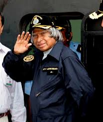
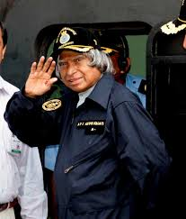
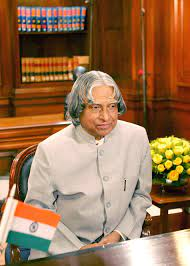
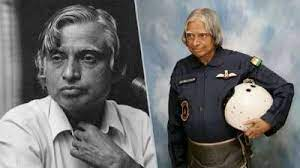
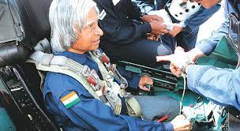
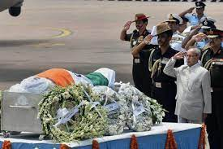

Biography
Dr. Avul Pakir Jainulabdeen Abdul Kalam, widely known as A.P.J. Abdul Kalam,
was born on October 15, 1931, in Rameswaram, Tamil Nadu, India. He emerged as one of
India's most distinguished scientists and served as the 11th President of India from 2002 to 2007.
 

Abdul Kalam hailed from a humble background and had a strong passion for learning.
Despite facing financial constraints, he excelled in academics and obtained a degree in
aeronautical engineering from the Madras Institute of Technology. His journey into the
world of science began when he joined the Defense Research and Development
Organisation (DRDO) in 1958.
Dr. Kalam's major breakthrough came with his involvement in India's civilian space
program and the development of satellite launch vehicles. He played a pivotal role in
the success of India's first indigenous satellite launch vehicle, SLV-III, which placed the
Rohini satellite into orbit in 1980.
 In the 1990s, Kalam served as the Chief Scientific Adviser to the Prime Minister and
later as the Secretary of the Defense Research and Development Organization. He was
instrumental in India's nuclear weapons tests in 1998, earning him the moniker
"People's President" for his connection with the masses.
In 2002, Abdul Kalam became the President of India, focusing on inspiring the youth
and promoting education. He was known for his simple lifestyle, approachability, and
strong advocacy for science, technology, and education.
Post his presidential term, Kalam continued to engage with students and youth,
delivering lectures and writing inspirational books. He believed in the potential of
young minds to bring positive change to the nation and the world
 Dr. A.P.J. Abdul Kalam passed away on July 27, 2015, while delivering a lecture at the
Indian Institute of Management Shillong. He left behind a legacy of inspiration,
dedication to education, and a vision for a developed and technologically advanced
India. Abdul Kalam remains a revered figure, remembered for his contributions to
science, space, and his commitment to nurturing the next generation of leaders.